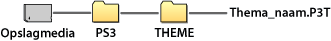

Instellingen > Thema-instellingen
Thema-instellingen
De instellingen wijzigen om XMB™ aan te passen voor items zoals de achtergrond of het lettertype van de schermteksten.
Thema
U kunt instellingen aanpassen om het ontwerp van elementen, zoals de achtergrond of de pictogrammen die worden weergegeven op het XMB™-scherm, te personaliseren. Het thema kan worden aangepast via de volgende methodes.
Een voorgeïnstalleerd thema selecteren
Selecteer een thema dat voorgeïnstalleerd is in het PS3™-toestel.
Een thema downloaden naar het PS3™-toestel
Wanneer u een thema downloadt van  (PlayStation®Store) of via
(PlayStation®Store) of via  (internetbrowser), wordt dit automatisch geïnstalleerd op het PS3™-toestel nadat de download voltooid is.
(internetbrowser), wordt dit automatisch geïnstalleerd op het PS3™-toestel nadat de download voltooid is.
Een thema installeren met een spelletjesdisc of in de handel verkrijgbare Blu-ray Disc-videosoftware (BD-ROM)
Om een themabestand dat op een disc staat te installeren en te gebruiken, selecteert u het pictogram  bij
bij  (Game) en selecteert u vervolgens het themabestand dat u wilt installeren. Het thema wordt automatisch gebruikt als het systeemthema wanneer de installatie voltooid is.
(Game) en selecteert u vervolgens het themabestand dat u wilt installeren. Het thema wordt automatisch gebruikt als het systeemthema wanneer de installatie voltooid is.
Een thema downloaden of aanmaken met een pc
Wanneer u een thema downloadt van een website of een thema aanmaakt met een pc, maakt u een nieuwe map aan genaamd [PS3] - [THEME] op het opslagmedium en slaat u het thema op in deze map. Themabestanden moeten worden opgeslagen met de extensie [.P3T].

Om het thema te installeren op de harde schijf van het PS3™-toestel, sluit u het opslagmedium dat het themabestand bevat aan op het toestel, en selecteert u vervolgens  (Instellingen) >
(Instellingen) >  (Thema-instellingen) > [Thema] > [Installeren].
(Thema-instellingen) > [Thema] > [Installeren].
Opmerkingen
- Een pictogram dat niet tot het themabestand behoort, wordt vervangen door een ander pictogram in het themabestand of blijft behouden als het standaard XMB™-schermpictogram.
- Indien een themabestand meerdere achtergronden bevat, zal de thema-achtergrond willekeurig wijzigen.
- Er is pc-software beschikbaar waarmee u uw eigen themabestanden kunt aanmaken om te gebruiken op uw PS3™-systeem (u hebt eveneens software nodig die te koop is voor het aanmaken van de grafische elementen). Surf naar de SCE-website voor uw regio voor meer informatie.
- U hebt een USB-adapter (niet meegeleverd) nodig om opslagmedia te kunnen gebruiken met sommige PS3™-modellen.
Thema's verwijderen
Selecteer het thema dat u wilt verwijderen, druk op de  -toets en selecteer vervolgens [Verwijderen].
-toets en selecteer vervolgens [Verwijderen].
Kleur
De achtergrondkleur van het XMB™-scherm instellen.
| Origineel | Stel de originele achtergrondkleur in. |
|---|---|
| (kleurstaal) | Stelt het geselecteerde kleur als achtergrondkleur in. |
Achtergrond
Stel de achtergrond in die gebruikt is in het thema of de afbeelding die als achtergrond gekozen is onder  (foto) als achtergrond van het XMB™-scherm.
(foto) als achtergrond van het XMB™-scherm.
| Helderheid | De helderheid van de achtergrond veranderen. |
|---|---|
| Origineel | Op het originele thema instellen. |
| Classic | Het thema [Classic] instellen. |
| (themanaam) | De achtergrond voor het thema gebruiken dat ingesteld is onder [Thema]. |
| Achtergrond | De afbeelding die als achtergrondafbeelding was geselecteerd onder (Foto) als achtergrond instellen. |
Lettertype
Stel het lettertype in dat moet worden gebruikt in het XMB™-scherm of in berichten onder  (Vrienden). Als de systeemtaal is ingesteld op Koreaans, vereenvoudigde Chinese tekens of traditionele Chinese tekens, kan deze instelling niet worden geselecteerd.
(Vrienden). Als de systeemtaal is ingesteld op Koreaans, vereenvoudigde Chinese tekens of traditionele Chinese tekens, kan deze instelling niet worden geselecteerd.
Opmerking
De lettertypes die kunnen worden geselecteerd hangen af van de gebruikte systeemtaal.